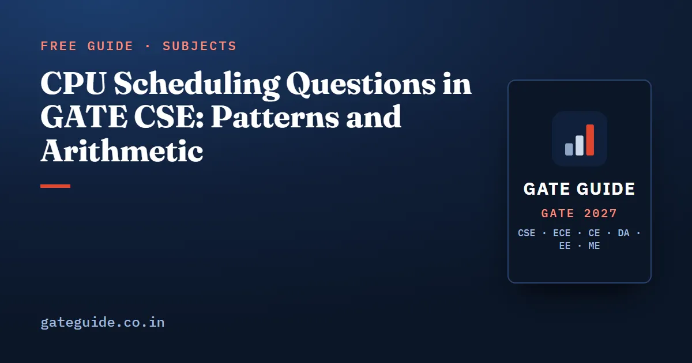

CPU Scheduling Questions in GATE CSE: Patterns and Arithmetic

CPU scheduling questions in GATE CSE are built from one object: a table of four or five processes with arrival and burst times, sometimes priorities, followed by a single numerical answer. The algorithm changes, the arithmetic does not. Three definitions and a careful timeline carry every question in this family, and this guide works a full example through four algorithms so the differences become visible rather than memorised.
In this guide
Key takeaways
- Three definitions cover everything: , , .
- Draw the timeline. Almost every lost mark here is a timeline error, not a concept error.
- Check your work with the identity .
- Round robin questions hide their difficulty in the queue order at a quantum boundary and in the context-switch cost.
- Tie rules and switch cost change the answer, so read them before you start.
Where scheduling sits in the paper
Third-party analyst compilations put Operating System at 5 to 16 marks per paper over 2009 to 2026, typically 6 to 10 marks in the 100-mark era, about four to six questions. These are unofficial figures and analysts differ by two to three marks on borderline items. Within the subject, a scheduling calculation is one of the four things the analysis finds in nearly every paper, alongside synchronization code analysis, paging arithmetic and page replacement. Analysts reported a multilevel-queue scheduling item in 2026.
| Scheduling form | Years placed in the reconstruction | Usual format |
|---|---|---|
| Round robin, with quantum or switch cost | 2004, 2006, 2007, 2009, 2010, 2013, 2014, 2015, 2020 | NAT, 2 marks |
| SRTF or preemptive shortest job first | 2006, 2007, 2011, 2012, 2014, and later years (approx.) | NAT, 2 marks |
| Non-preemptive SJF and algorithm comparison | 2001, 2005, 2009, 2014, 2019 | MCQ or NAT, 1–2 marks |
| FCFS and the convoy effect | 2005 (approx.), 2010, 2013 | NAT or MCQ, 1–2 marks |
| Priority scheduling with arrivals | 2012, and several years marked approximate | NAT, 2 marks |
| Multilevel queue or feedback queue | 2026, with earlier approximate placements | NAT, 2 marks |
These year attributions come from an analyst reconstruction of previous-year repositories and are approximate. The subject-wide ranking is in the Operating Systems important topics guide.
One table, four algorithms
Take four processes: P1 arrives at 0 with a burst of 5, P2 arrives at 1 with 3, P3 arrives at 2 with 6, and P4 arrives at 4 with 2. Context-switch cost is zero and ties break by earlier arrival.
FCFS. Processes run in arrival order: P1 from 0 to 5, P2 to 8, P3 to 14, P4 to 16. Turnaround times are 5, 7, 12 and 12, and waiting times are 0, 4, 6 and 10:
Non-preemptive SJF. P1 runs to 5 because nothing else has arrived at time 0. At time 5 the ready set is P2, P3 and P4, so the shortest, P4, runs to 7; then P2 to 10; then P3 to 16. Turnaround times are 5, 9, 14 and 3, and the average burst is 4:
SRTF. P1 starts. At time 1, P2 arrives with a remaining time of 3, which is less than P1's remaining 4, so P1 is preempted. P2 finishes at 4, exactly when P4 arrives with a burst of 2, the shortest, so P4 runs to 6. Then P1 finishes at 10 and P3 at 16.
| Process | Arrival | Burst | Completion | Turnaround | Waiting |
|---|---|---|---|---|---|
| P1 | 0 | 5 | 10 | 10 | 5 |
| P2 | 1 | 3 | 4 | 3 | 0 |
| P3 | 2 | 6 | 16 | 14 | 8 |
| P4 | 4 | 2 | 6 | 2 | 0 |
| Average | 4 | 7.25 | 3.25 |
The averages fall from 5 under FCFS to 3.75 under SJF to 3.25 under SRTF, which is the ordering the theory predicts: SRTF minimises average waiting time when arrivals are staggered. The check holds too: .
Round robin with context-switch cost
Round robin is where careful candidates separate themselves, because the timeline has to carry the overhead explicitly.
Three processes arrive together at time 0 in the order P1, P2, P3 with bursts 4, 3 and 1. The quantum is 2 and each context switch costs 1 unit; no switch is charged before the first dispatch.
| Interval | Activity |
|---|---|
| 0–2 | P1 runs, 2 units left |
| 2–3 | context switch |
| 3–5 | P2 runs, 1 unit left |
| 5–6 | context switch |
| 6–7 | P3 runs and finishes |
| 7–8 | context switch |
| 8–10 | P1 finishes |
| 10–11 | context switch |
| 11–12 | P2 finishes |
Completion times are P3 at 7, P1 at 10 and P2 at 12. Turnaround times are 10, 12 and 7, and waiting times are 6, 9 and 6. There are four context switches, so the 8 units of useful work stretch to 12 units of elapsed time:
Response times are different again: 0 for P1, 3 for P2 and 6 for P3. A question asking for average response time under round robin is not asking for average waiting time, and treating them as the same is one of the most reliable ways to lose two marks in this subject.
Tie rules and conventions
- Ready-queue insertion at a boundary. When a process arrives at the exact instant the running process is preempted, the convention is that the new arrival enters the ready queue before the preempted process.
- Ties in SJF and SRTF. Break by earlier arrival, then by lower process index. SRTF preempts only when the new burst is strictly shorter than the remaining time.
- Non-preemptive SJF chooses among arrived processes. A shorter job that has not yet arrived does not count at the decision instant.
- Priority direction. Lower number usually means higher priority, but the question decides. Read the sentence.
- No switch when the same process continues. If round robin finds no other ready process, the running process continues without a switch.
- Idle CPU. If nothing has arrived, the CPU idles and the timeline advances; the idle time is not waiting time for anyone.
When a real paper leaves a convention unstated, the published keys have historically assumed zero switch cost and a first-come tie-break.
Beyond the four basics
Two variants turn up often enough to prepare. A multilevel queue splits the processes across two queues with different algorithms, typically a round robin queue that can preempt a batch queue running FCFS; the only new decision is whether an arrival in the higher queue preempts the lower one, which the question states. And a CPU-utilisation item gives processes that alternate CPU and input-output bursts and asks for the fraction of time the single CPU is busy, which is a steady-state cycle analysis rather than a Gantt chart.
How to practise
Build one process table and solve it under every algorithm on the same page, as done above. Seeing the same numbers move under FCFS, SJF, SRTF and round robin fixes the mechanics faster than four unrelated questions do. Then redo the round robin version with a non-zero switch cost and with the quantum changed by one, because those two levers are exactly what setters adjust.
Write your conventions on the same sheet and apply the average-waiting check every time. Scheduling items are usually numerical-answer questions, so there is no option list to catch you; the guide to attempting MCQ, MSQ and NAT questions explains how that changes your verification habits, and the list of common mistakes that cost marks collects the slips across subjects. The formulas here are also in the GATE CSE formula sheet, and the Operating System chapter of the GATE CSE 2027 book works the full range of scheduling variants with every convention stated inside the question.
Frequently asked questions
How do you calculate average waiting time and turnaround time?
Turnaround time is completion time minus arrival time, . Waiting time is turnaround time minus burst time, . Average each column over the processes. A quick check is that average waiting time equals average turnaround time minus average burst time, , which catches most arithmetic slips in under ten seconds.
What is the difference between waiting time and response time?
Waiting time is the total time a process spends in the ready queue. Response time is the time from arrival until it first gets the CPU. They are equal under a non-preemptive policy with a single burst, but they differ under round robin, where a process is dispatched many times. A question asking for response time is often answered with waiting time by mistake.
Which scheduling algorithm gives the minimum average waiting time?
Shortest remaining time first, the preemptive form of shortest job first, minimises average waiting time when arrival times are staggered. Non-preemptive shortest job first is optimal only among non-preemptive policies. Both need burst lengths in advance, which is why they are analytical benchmarks rather than practical schedulers, and both can starve long jobs.
How is context-switch cost included in round robin questions?
Treat each switch as a fixed block of time inserted into the timeline whenever the CPU moves from one process to another. It lengthens every completion time and therefore both turnaround and waiting time. No switch is counted when the same process continues, and questions usually state whether the switch before the first dispatch counts.
What are the tie rules in GATE scheduling questions?
When two processes have equal remaining time, the convention is to prefer the earlier arrival and then the lower process index. A process arriving at the exact instant the running process is preempted or completes is placed in the ready queue before the preempted process. A well-set question states these rules, so read them before drawing the chart.
Sources
- GATE 2027 official website (IIT Madras)
- GATE 2027 CS syllabus (official PDF)
- GATE 2027 question paper pattern (official)
- GeeksforGeeks subject-wise weightage for GATE CS
- GATE Overflow previous year questions
Dates, fees and the syllabus are set by the GATE 2027 organising institute and can change. Always confirm at gate2027.iitm.ac.in.